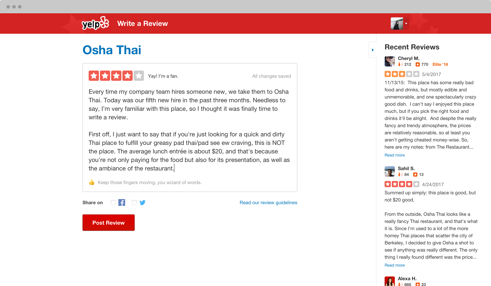
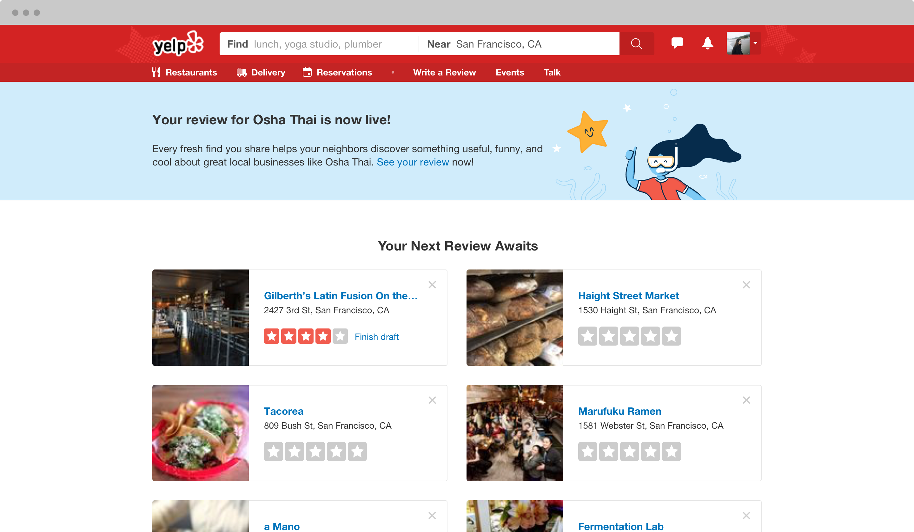

Yelp Desktop Review Compose Page
May–October 2017- Sketch
- Principle
The Contributions team at Yelp saw an opportunity to improve the review-writing experience on desktop by redesigning both the review compose and post-review pages. Although the experience was responsible for 40% of Yelp's reviews at the time, the overal designs hadn't been touched in a number of years, which was reflected in the amount of clutter and the lack of focus on review-writing on the page. As the sole designer on the Contributions team at the time, I redesigned the writing experience on web, which resulted in a 6% increase in reviews posted compared to the old design!

Review compose page
Review compose page

Post-review page
Post-review page
Before the Redesign

Old review compose page

Old post-review page